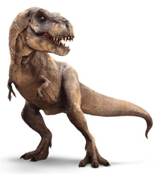
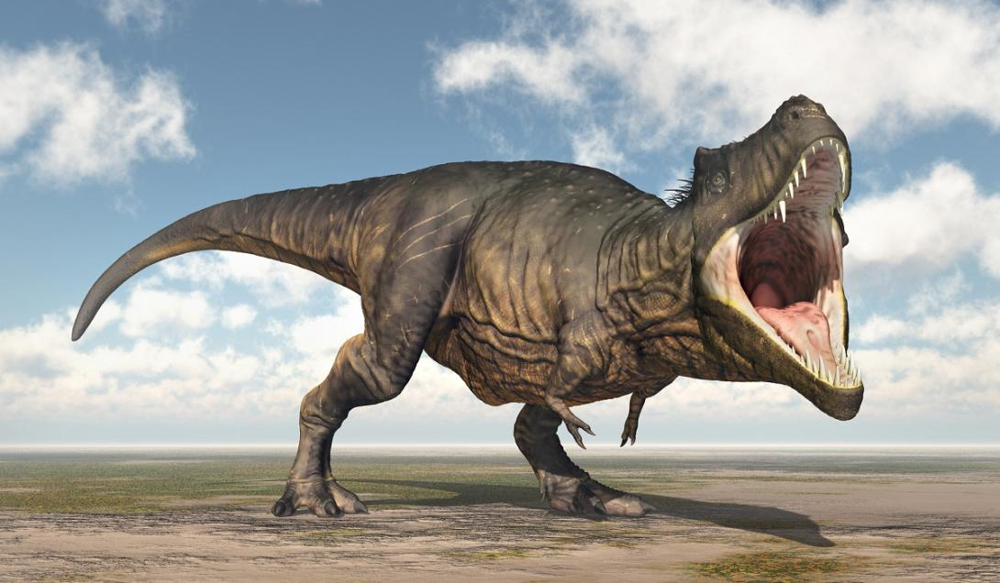

O Tyrannosaurus rex, frequentemente abreviado como T. rex, é um dos dinossauros mais famosos e imponentes que
já caminharam sobre a Terra. Viveram durante o final do período Cretáceo, há aproximadamente 68 a 66 milhões de
anos, e são conhecidos por sua enorme estatura, poderosas mandíbulas e presença marcante na cultura popular.
Características Principais
Tamanho e Estrutura: O Tyrannosaurus rex era um dos maiores carnívoros terrestres, com um
comprimento de cerca de 12 metros e uma altura de até 6 metros nos quadris. Seu peso estimado variava de 5 a 7
toneladas. Sua estrutura corpórea era robusta, com um crânio enorme e mandíbulas poderosas equipadas com dentes
serrilhados, projetados para esmagar ossos e cortar carne.
Mandíbulas Poderosas: O T. rex possuía uma das mordidas mais fortes de todos os animais terrestres
conhecidos. Seus dentes, que podiam medir até 15 centímetros, eram ideais para desmembrar suas presas e triturar ossos.
Estudos sugerem que a força de mordida do T. rex podia exceder 6 toneladas.
Pernas e Movimento: Apesar de seu tamanho colossal, o T. rex tinha pernas relativamente curtas
e robustas, adaptadas para suportar seu peso. Seus membros anteriores eram pequenos e com dois dedos, que
pareciam quase inúteis em comparação com o resto de seu corpo, mas ainda assim possuíam músculos poderosos.
Comportamento e Dieta
Predador Apex: O Tyrannosaurus rex era um predador de topo em seu ecossistema, alimentando-se
de outros dinossauros e possivelmente até mesmo de carcaças de animais mortos. Acredita-se que ele era um caçador
eficiente, utilizando sua força e velocidade para capturar presas grandes.
Sentidos Aguçados: O T. rex possuía sentidos muito desenvolvidos. Seus olhos eram grandes e
bem posicionados para fornecer uma visão estereoscópica, o que ajudava na caçada. Além disso, estudos sugerem
que seu olfato era extremamente apurado, ajudando-o a localizar presas e carcaças a longas distâncias.

Paleontologia e Descobertas
Descoberta e Fósseis:O Tyrannosaurus rex foi descrito pela primeira vez em 1905, e desde
então, diversos esqueletos e fragmentos foram encontrados, principalmente na América do Norte. Esses fósseis
forneceram uma grande quantidade de informações sobre a biologia e o comportamento desse dinossauro.
Impacto Cultural: O T. rex se tornou um ícone da cultura popular, aparecendo em muitos filmes,
livros e exposições de museus. Sua representação na mídia ajudou a popularizar a paleontologia e a fascinação
por dinossauros.
Curiosidades
Nome: O nome "Tyrannosaurus rex" significa "Rei dos Lagartos Tirano", refletindo seu
status como um dos predadores mais temidos de sua era.
Sobrevivência: O T. rex viveu durante o final do período Cretáceo, uma época de grandes mudanças
na flora e fauna, incluindo o evento de extinção em massa que levou ao desaparecimento dos dinossauros
não aviários.

Resumo de informações sobre o Tyrannosaurus rex
Classificação
Reino: Animalia
Filo: Chordata
Classe: Reptilia
Ordem: Saurischia
Família: Tyrannosauridae
Gênero: Tyrannosaurus
Espécie: T. rex
Características Físicas
Comprimento: Aproximadamente 12 metros
Altura: Cerca de 4 metros até os quadris
Peso: Entre 8 e 14 toneladas
Cabeça: Grande, com mandíbulas poderosas
Dentes: Afiados, com até 30 cm de comprimento
Braços: Curtos, com dois dedos
Cauda: Longa e pesada, usada para equilíbrio
Hábitat e Período
Período: Cretáceo Superior (cerca de 68 a 66 milhões de anos atrás)
Localização: América do Norte
Ambiente: Florestas subtropicais e áreas costeiras
Dieta
Carnívoro
Alimentação: Outros dinossauros, incluindo herbívoros grandes
Habilidade de caça: Provavelmente caçava em emboscadas
Possibilidade de necrófago: Podia se alimentar de carcaças quando disponível
Curiosidades
Significado do nome: "Rei dos lagartos tiranos"
Primeiro fóssil encontrado: 1902
Popularidade: Um dos dinossauros mais famosos e estudados